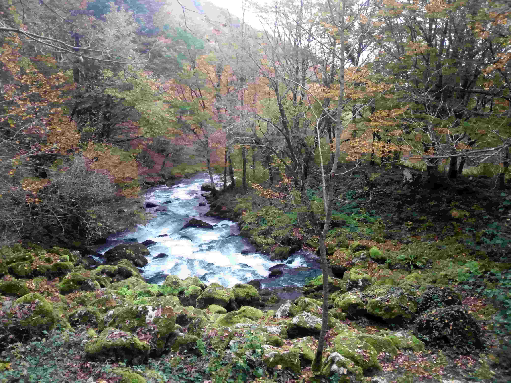

Sana River
Pecka · Mrkonjić Grad · Bosnia and Herzegovina
Flowing through the beautiful landscapes of Bosnia and Herzegovina, the Sana River is an important part of the region's natural environment. Near Pecka, the river and its surrounding scenery offer a peaceful setting shaped by clear waters, green landscapes and the rugged beauty of western Bosnia. Away from busy tourist destinations, this area provides an opportunity to appreciate the region's riverside nature and quiet rural atmosphere. The river's clear waters and the surrounding greenery create a distinctive landscape that changes with the seasons and the light throughout the day. The area around its springs is particularly appealing for those interested in nature, photography and peaceful outdoor experiences. During my visit, I enjoyed observing the river, its natural surroundings and the atmosphere of this quiet corner of the country. These photographs preserve my personal impressions and memories of the Sana River near Pecka.
My Photo Gallery
Explore my personal travel photos of Sana River.
View All Photos ↗